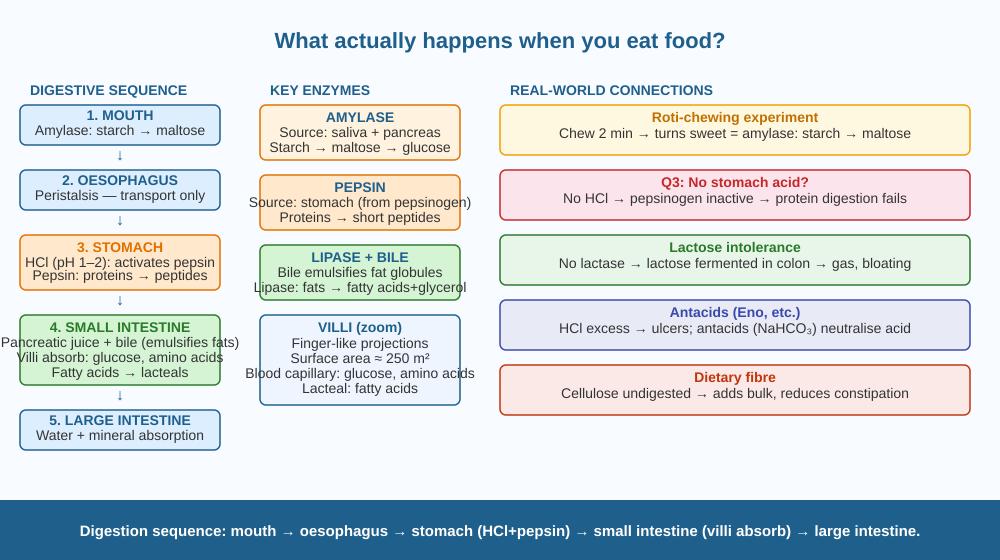

Trace the complete journey of a single bite of food — from your mouth to your bloodstream — and understand exactly what each organ does, what chemicals it releases, and why the sequence matters.
A piece of roti contains starch, protein, a little fat, water, and minerals. Your blood needs glucose, amino acids, fatty acids, and minerals — not roti. Yet within a few hours of eating, your body has extracted exactly what it needs. How does a solid piece of bread become liquid nutrients that flow in your blood?
Digestion works through two types of process:
Mechanical digestion: physically breaking food into smaller pieces (chewing, churning in the stomach). Chemical digestion: enzymes and acids breaking large molecules into small ones that can be absorbed.
The sequence:
1. Mouth. Teeth crush food into a bolus (soft ball). Saliva contains amylase, which begins breaking starch into maltose (a smaller sugar). Saliva also lubricates the food for swallowing.
2. Oesophagus. A muscular tube using rhythmic squeezing called peristalsis to push the bolus to the stomach. No digestion here — only transport.
3. Stomach. A muscular sac that churns food vigorously. The stomach wall secretes: - Hydrochloric acid (HCl): pH 1–2. Kills most bacteria. Activates pepsinogen → pepsin. - Pepsin: a protease enzyme that breaks proteins into shorter peptide chains. - The churned mixture is now called chyme. - No stomach acid = no active pepsin = proteins remain undigested. This directly explains Q3.
4. Small intestine (main digestion and absorption site). Three sections: duodenum, jejunum, ileum. - The pancreas secretes pancreatic juice (amylase, protease, lipase) into the duodenum. - The liver produces bile (stored in the gallbladder), which emulsifies fats — breaking large fat globules into tiny droplets so lipase can reach them. - Final products: glucose (from starch), amino acids (from proteins), fatty acids + glycerol (from fats). - The small intestine wall is lined with villi (finger-like projections) and microvilli, giving a total absorption surface area of ~250 m² — half a tennis court. - Glucose and amino acids pass directly into blood capillaries inside the villi. - Fatty acids are absorbed into lymph vessels (lacteals).
5. Large intestine. Absorbs water and some minerals. Remaining undigested material (dietary fibre) is compacted into faeces.
The order matters: if food bypassed the stomach, proteins would not be partially digested, and the small intestine's enzymes would have to work much harder or would fail entirely.
Think of the digestive system as an assembly line in reverse — a disassembly line. Each station (mouth, stomach, small intestine) has specialised workers (enzymes, acid) that break the incoming material into progressively smaller parts. The final station (villi) is the loading dock where the smallest pieces are transferred into the bloodstream. Skip any station, and the pieces arriving at the loading dock are too big to fit through the door.

The diagram shows the digestive tract from mouth to rectum, labelled in order: mouth (amylase), oesophagus (peristalsis arrows), stomach (HCl + pepsin labels, churning arrows), small intestine (pancreatic juice + bile input, villi zoom inset), large intestine (water absorption), rectum. Each organ has a colour-coded enzyme/acid label. The villi inset shows the finger-like projections with blood capillary and lacteal inside.
Chew a plain piece of roti or bread slowly for 2 minutes without swallowing. Notice: it begins to taste sweet. This is amylase in your saliva breaking starch into maltose — a sugar. You have just started chemical digestion in your own mouth and detected the product (maltose) with your taste buds.
The stomach lining is protected from its own acid by a thick mucus layer. Every few days, the mucus must be regenerated. If the bacterium Helicobacter pylori colonises the stomach, it produces urease (an enzyme that neutralises acid locally) — allowing it to survive in the stomach and damage the mucus layer. Over time this causes peptic ulcers. H. pylori affects about 44% of the global population. Why might this bacterium be more common in places with less access to clean drinking water, and how would you test whether a person has it without invasive surgery?
What is the correct sequence of digestion in the human body?
Why is identifying the mechanism of digestion more useful than memorising the result?
If a person's stomach produced no acid, what would you predict?
A person with achlorhydria (a condition where the stomach produces no HCl) eats a meal containing chicken (protein) and rice (starch). Predict: (a) which nutrient will be most affected in digestion, and why; (b) whether calcium absorption from the meal will be affected (hint: calcium needs an acid environment to dissolve from food into an absorbable form); (c) what symptom the person might feel after the meal, and why.
The stomach's digestive juices are so acidic they could dissolve a razor blade — yet the stomach itself is not digested. The reason: the stomach lining is replaced entirely every 3–5 days. About half a million stomach cells are shed every minute and replaced by new ones growing from the stomach lining. You grow a completely new stomach lining several times a year. The cells between the acid and the stomach wall live for only a few days before being swept away and replaced — faster than any other cells in the body except blood cells.
Digestion = mechanical + chemical. Sequence: mouth (amylase) → oesophagus (peristalsis) → stomach (HCl + pepsin for proteins) → small intestine (enzymes + bile, villi absorb) → large intestine (water). No stomach acid → protein digestion fails.